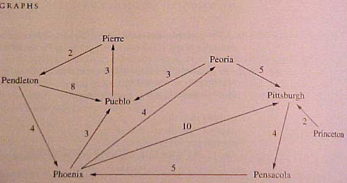

Weighted, Directed Graphs & Adjacency Matrices
A graph may be thought of as a set of nodes and edges. Many authors call the nodes vertices.
For our purposes the terms are interchangeable and we will use nodes because it's shorter.
In a weighted, directed graph, the nodes and the edges may carry a label or some information.
Often the nodes will carry a label and the edges will carry a value (weight or cost).
In a directed graph an edge has direction. It goes from
one node to another node.
In the graph example below, the weighted edges
(representing distance)
go from one city to another city. The edges have direction

Such a graph G can be represented via an adjacency matrix. In such a matrix
the row and column names are the names of the nodes. The value at each G[row][col]
position represent the cost or weight of the edge between the two nodes.
If there is no edge between two nodes then an impossibly large value such as
infinity ( oo ) or a large constant is stored to represent the fact that
no edge exists between the 2 nodes. Also note a weight of 0 between any
node to itself.
The adjacency Matrix for the above example would thus be:
City # 0 1 2 3 4 5 6 7
--------------------------------------------
0 Pendeleton 0 oo oo 4 oo oo oo 8
1 Pensicola oo 0 oo 5 oo oo oo oo
2 Peoria oo oo 0 oo oo 5 oo 3
3 Phoenix oo oo 4 0 oo 10 oo 3
4 Pierre 2 oo oo oo 0 oo oo oo
5 Pittsburgh oo 4 oo oo oo 0 oo oo
6 Princeton oo oo oo oo oo 2 0 oo
7 Pueblo oo oo oo oo 3 oo oo 0
Filling an adjacency Matrix from an input file
Your 1st assignment will require you to read a text file graph.txt into a
matrix that represents the adjacency matrix of a graph. The adjacency
matrix input file for lab 1 looks like this: This format is called 'sparse'
format - since it only list values for existing edges. Here are the
contents of graph.txt which you will use in Lab2.
8
0 1 10
0 6 2
1 2 31
2 1 22
3 5 11
4 0 9
4 1 56
4 3 13
5 2 25
5 6 15
6 1 6
6 7 22
7 0 12
7 5 1
The first number in the file represents how many nodes the graph has. The remaining
lines are triplets of the form (source-node, dest-node, edge-weight).
In the above input file, the second line of the file reads as follows:
0 1 10
There is an edge from node 0 to node 1 and the weight of the edge is 10.
The third line of input reads as follows:
0 6 2
There is an edge from node 0 to node 6 and the weight of the edge is 2.
and so on for every remaining triplet line in the input file.
From this input file is obvious what is to be done. We must dimension a
8 x 8 matrix and for every triplet (source, dest, weight ) we read in, we
will store
G[source][dest] = weight // where G is some 2D array indexed with [][] braces
Properties of directed graphs
A nodes of a directed graph has certain properties as a result of it's edges having
direction. For a directed graph, we can define the following
terms:
- out-degree - the number of edges leaving the vertex
- in-degree - the number of edges entering the vertex
- degree - the number of edges entering and leaving the vertex
Your lab1 assignment will be to write a graph class to containing a 2D array to
store the connection data and to implement amoung others) the above 3 member
methods. After doing so and testing your implementation, you are to implement
the following client functions in the Lab1.java (driver) file to exercise
the 3 above member functions:
- Max Out Degree - the maximal number of edges leaving any single vertex
- Min Out Degree - the minimal number of edges leaving any single vertex
- Max In Degree - the maximal number of edges entering any single vertex
- Min In Degree - the minimal number of edges entering any single vertex
- Max Degree - the maximal number of edges entering/leaving any single
vertex
- Min Degree - the minimal number of edges entering/leaving any single
vertex
For the input file graph.txt -- the correct answers are
- Max Out Degree - 3
- Min Out Degree - 1
- Max In Degree - 4
- Min In Degree - 0
- Max Degree - 5
- Min Degree - 2
In class exercise: ( I'll ask for help from you then draw the
answer on the big screen)
- Draw and fill in the 2D array that represents the above graph file (sparse format).
- Describe an algorithm for computing the in-degree, out-degree and degree
of a given node
- Describe an algorithm for computing the min and max in/out/degree
of the graph?
Concepts Review:
New application of 2D arrays: A Graph Class
We want to write a Graph class to represent a graph
- What are the data members of a Graph class?
- a Matrix of ints representing cost/weight for that edge
- Counters for how many edges etc.
- What should the Constructor do?
- Initialize the number of roaws and columns
- Initialize each element to the NO_EDGE value (use some constant)
- What other methods are need to represent our graph concept?
- addEdge( scr, dest, weight) // puts a weight value there
- removeEdge( src, dest ) // pit a NO_EDGE val there
- hasEdge( src, dest ) // T/F is there an edge here ?
- readEdgeFile( fileName ) // read in a sparse format graph input file
- print() // dumps a 2x2 text table (Matrix) of the edges
- others ?